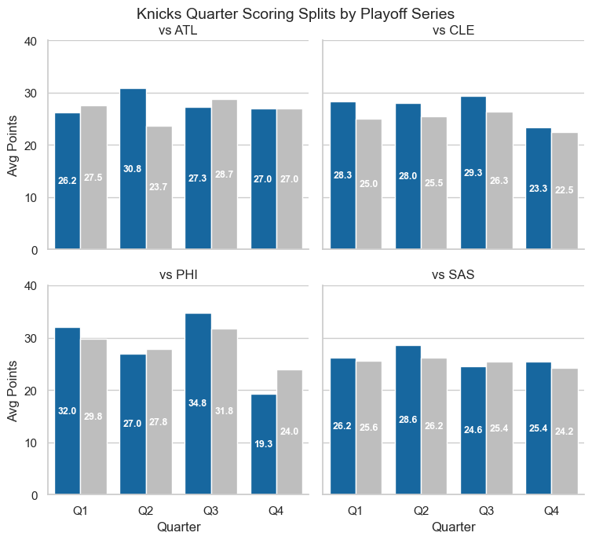
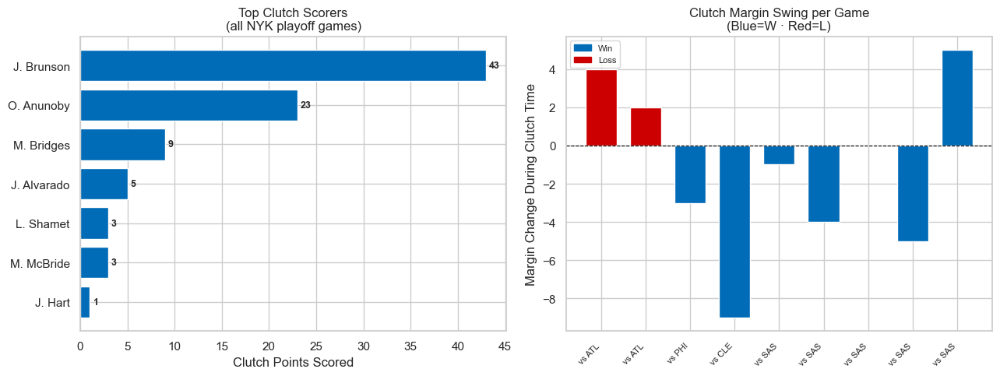
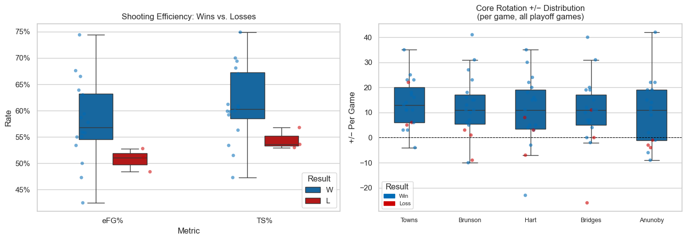
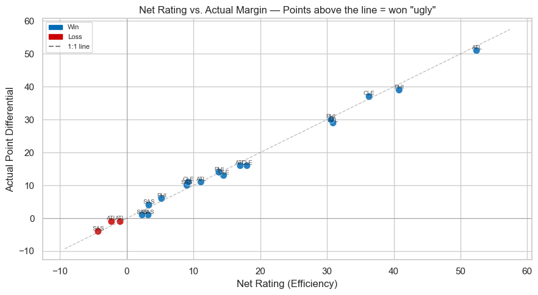
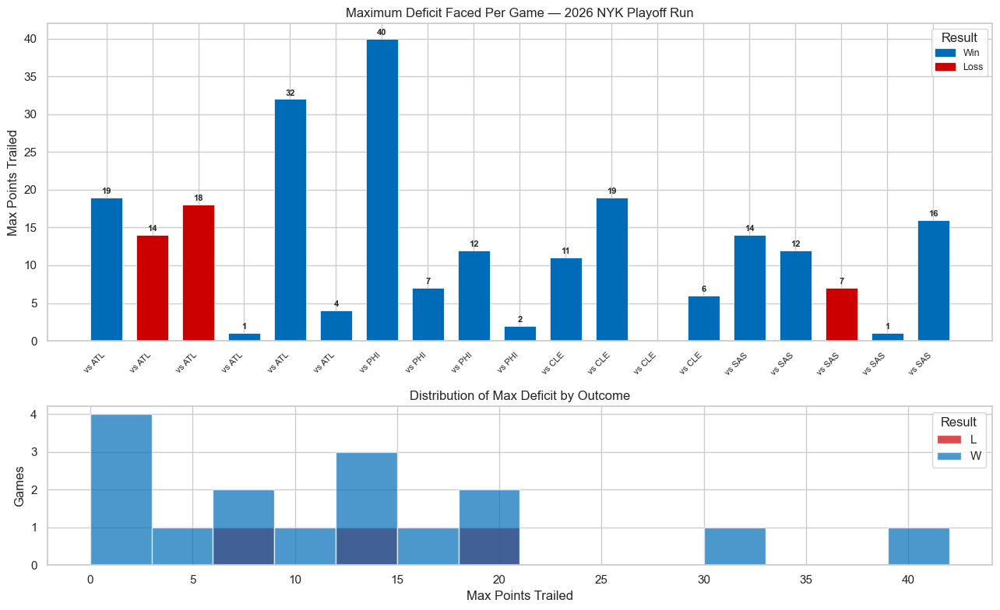

When Analytics Lie: How the 2026 Knicks Won It All
The box score says 16–3 and +15.3 net rating. The play-by-play says they trailed in 14 of 19 games, lost ground in clutch time, and almost never led wire-to-wire. Both are true.
Championship teams usually leave a clean analytical fingerprint: positive clutch differential, comfortable leads, efficiency that matches the scoreboard. The 2026 New York Knicks did none of that consistently — and still raised a banner.
This post walks through their full playoff run using two data layers: play-by-play event data for quarter splits, clutch windows, and comeback paths, and full box-score logs for efficiency and player impact. Every core metric below was computed in SQL (DuckDB) with window functions and CTEs; charts are visualization only.
The question is not whether the Knicks were good. They were. The question is where the numbers told the truth — and where a model would have bet against them anyway.
The Snapshot
Zoom out first. Nineteen playoff games, four series, one title:
| Metric | Value |
|---|---|
| Record | 16–3 |
| Points per game | 115.8 |
| Opponent PPG | 100.9 |
| Net rating | +15.3 |
| Play-by-play actions tracked | 9,510 |
| Games with 5+ pt deficit at some point | 14 of 19 |
| Wire-to-wire wins (never trailed) | 1 |
Elite aggregate numbers — and an unusually volatile path to get there. That tension is the whole story.
Quarter Splits: They Adjusted, They Didn't Dominate
End-of-period scores from PBP give quarter-by-quarter scoring without relying on noisy stint data. Average points per quarter by series:
| Series | Q1 | Q2 | Q3 | Q4 |
|---|---|---|---|---|
| vs ATL | 26.2 / 27.5 | 30.8 / 23.7 | 27.3 / 28.7 | 27.0 / 27.0 |
| vs CLE | 28.3 / 25.0 | 28.0 / 25.5 | 29.3 / 26.3 | 23.3 / 22.5 |
| vs PHI | 32.0 / 29.8 | 27.0 / 27.8 | 34.8 / 31.8 | 19.3 / 24.0 |
| vs SAS (Finals) | 26.2 / 25.6 | 28.6 / 26.2 | 24.6 / 25.4 | 25.4 / 24.2 |

Format is NYK avg / Opponent avg per quarter. Three patterns stand out:
- Q2 was the separator. The biggest quarter edge of the run came in Q2 vs Atlanta (+7.2). Slow Q1, surge Q2 — classic Thibs adjustment game.
- Q1 was rarely a weapon. NYK was outscored in Q1 in three of four series. Models that weight "first quarter margin" would have faded this team repeatedly.
- Philly was split personality. 34.8 pts in Q3, then 19.3 in Q4 (−4.8 differential). They won the series on shot-making and free throws, not sustained dominance.
The Finals profile vs San Antonio was the most balanced — no quarter worse than −0.8. Boring on paper. Championship teams often are.
Clutch Time: Won the Game, Lost the Last Five Minutes
Clutch is defined the way it should be in PBP work: 4th quarter or OT, ≤5:00 remaining, margin ≤5 points. Not season-long "clutch" splits diluted across 82 games.
| Clutch Metric | Value |
|---|---|
| Games reaching clutch | 9 |
| Record in clutch games | 6–3 |
| Avg margin swing during clutch | −1.2 pts |
| Games with positive clutch swing | 3 of 9 |

They won close games without consistently winning clutch minutes. In most clutch stretches they lost ground on the scoreboard — protecting leads built in the first 43 minutes, not seizing them late.
For prop models that overweight clutch counting stats, this run is a cautionary tale. Postseason success came from Brunson's overall volume, defensive depth, and role-player stability — not a repeatable late-game crutch you could regression-bet on.
Efficiency vs. Outcome
When NYK won, they shot like a juggernaut. When they lost, the gap was stark — and only three losses means each one is identifiable, not noise.
| Result | eFG% | TS% |
|---|---|---|
| Wins | 58.6% | 61.8% |
| Losses | 50.8% | 54.5% |

That is nearly an 8-point eFG gap between wins and losses. Losses were shooting slumps, not defensive collapses — when NYK lost, they usually couldn't buy a bucket.
Plot net rating against actual margin and you get two types of lies: "ugly wins" above the 1:1 line (outscored opponents by more than efficiency predicted) and games below the line where the scoreboard was worse than the process. NYK had both. A single net-rating number undersells the variance of this run.

The core five all posted positive average plus/minus: Brunson (+12.3), KAT (+13.6), Hart (+10.6), Bridges (+10.3), OG (+9.6). The starting lineup's floor was high. The open question was always whether the bench could hold leads when stars sat.
Comeback Frequency: Almost Never Comfortable
If one stat captures the run in a sentence: they were almost never comfortable.
| Comeback Metric | Value |
|---|---|
| Games trailing by 5+ at some point | 14 of 19 |
| Comeback wins from 5+ down | 11 |
| Largest comeback win (max deficit) | 40 pts vs PHI |
| Wire-to-wire leads (never trailed) | 1 |

Comeback probability is nonlinear. Trailing by 8 with six minutes left in Q3 is not simply 2× harder than trailing by 4 — context dominates. NYK's comeback frequency points to mental edge and halftime adjustments, not a stable efficiency advantage you could plug into a spreadsheet.
Who Carried Them
| Player | PPG | Avg +/- |
|---|---|---|
| Jalen Brunson | 28.4 | +12.3 |
| OG Anunoby | 20.1 | +9.6 |
| Karl-Anthony Towns | 15.9 | +13.6 |
| Mikal Bridges | 13.5 | +10.3 |
| Josh Hart | 10.4 | +10.6 |
Brunson was the engine — nearly double the next option's scoring load. KAT led the core in plus/minus despite modest PPG: rim protection, spacing, and foul-drawing don't always show up in the points column. OG at 20.1 PPG on lower usage is high-leverage scoring from a 3-and-D profile. Hart and Bridges were connective tissue — championship rosters need glue guys who don't need the ball.
How the SQL Layer Works
The analysis pipeline mirrors how a production analytics stack would treat this question:
- Raw PBP loaded from parquet into DuckDB (
games_enrichedview with running score viaLAST_VALUEwindow functions). - Quarter splits via
LAG()on end-of-period scores — no manual pandas groupby. - Clutch filter as a SQL view:
period >= 4 AND secs_remaining <= 300 AND ABS(live_margin) <= 5. - Box scores joined on
gameIdfor efficiency, player aggregates, and W/L splits.
Python handles charts. SQL owns the truth. That separation is deliberate — it's the same workflow you'd use if this were a nightly pipeline instead of a one-off championship postmortem.
The Honest Caveat
Nineteen games is a small sample. Playoff intensity, matchup-specific game plans, and injury context don't fully encode into net rating or clutch swing. You cannot backtest "championship probability" from this alone.
The 2026 Knicks also didn't defy analytics every night. When they shot well, the numbers loved them. They defied analytics on the nights they couldn't shoot — and still found 16 wins. That is harder to model than pure efficiency would suggest.
The Practical Takeaway
- Aggregate net rating lied about how this team actually won — the path was volatile even when the average was elite.
- Clutch splits from box-score tables miss the story; PBP-defined clutch windows showed NYK often gave ground late.
- Quarter splits reveal adjustment (Q2 surges) better than full-game efficiency.
- Comeback frequency is a separate skill from shooting efficiency — models that conflate them will misprice playoff series.
- When building props or game models, separate process metrics from path metrics. The Knicks had elite process on average and a chaotic path almost every game.
The 2026 Knicks were 16–3 with a +15.3 net rating — and they trailed by 5+ in 14 of 19 playoff games, lost ground in clutch time more often than not, and led wire-to-wire exactly once. Analytics didn't lie about how good they were. They lied about how comfortable it was getting there. That's the gap worth modeling.